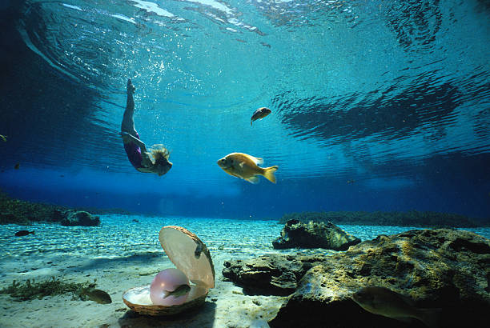
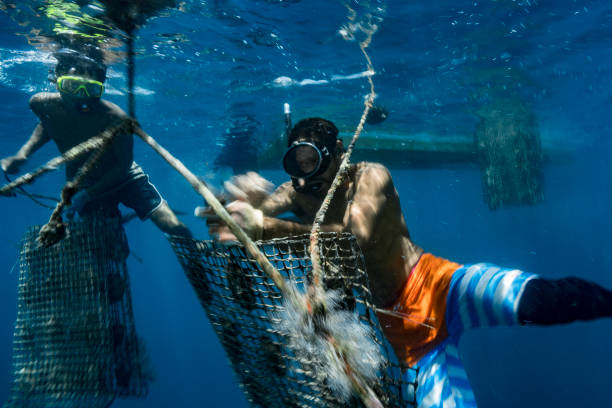
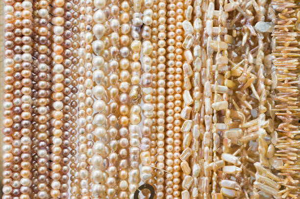
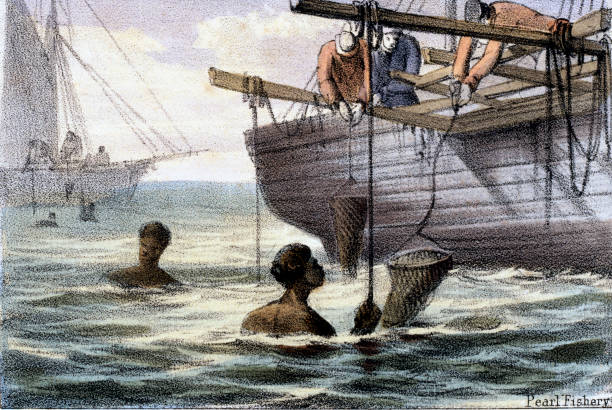
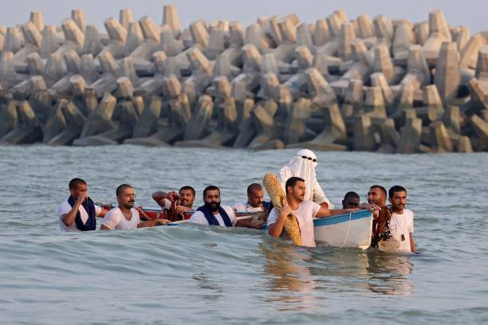
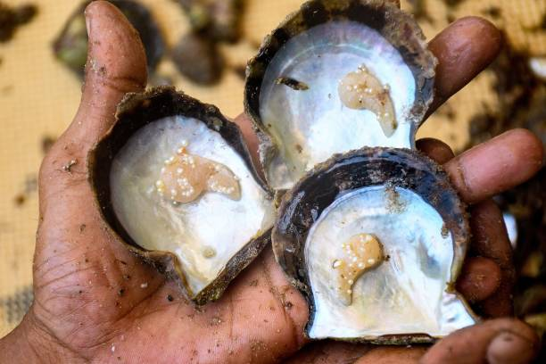
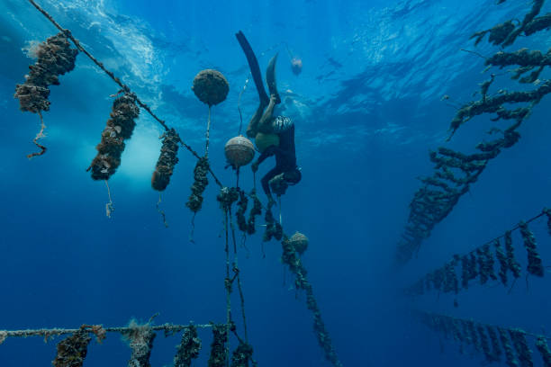

Pearl Diving Gallery

DIver explores underwater world in search of natural pearls

Different Eqipmeents and nets used by Pearl Divers

Strands of cultured pearls in various colors and sizes

Historical pearl diving illustration from traditional fishery times

Modern pearl culture celebration ritual in coastal waters

Freshly harvested oysters revealing pearly interiors

Diver checking pearl oyster lines in deep water